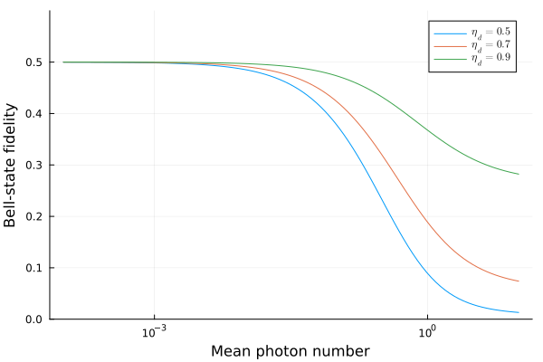

Getting Started
Installation
Julia
Genqo.jl requires Julia 1.12 or later. Install it from the Julia REPL:
using Pkg
Pkg.add("Genqo")Python
The Python wrapper requires Python ≥ 3.9 and uses juliacall to call Julia under the hood.
pip install genqoQuick Start
Julia
Load the package and access sources through their submodule namespaces:
using Genqo
# TMSV: probability of coincidence detection
Pg = tmsv.probability_success(1e-2, 0.9)
# SPDC: Bell-state fidelity and spin-spin density matrix
F = spdc.fidelity(1e-2, 0.8, 0.6)
ρ = spdc.spin_density_matrix(1e-2, 0.8, 0.6, [0,1,0,1])
# ZALM: fidelity, probability of success, and density matrix
F = zalm.fidelity(1e-2, 0.8, 0.6, 0.9)
Pg = zalm.probability_success(1e-2, 0.8, 0.6, 0.9, 0.0)
ρ = zalm.spin_density_matrix(1e-2, 0.8, 0.6, 0.9, [1,0,1,1,0,0,1,0])
# SIGSAG: fidelity and probability of success
F = sigsag.fidelity(1e-2, 0.8, 0.6)
Pg = sigsag.probability_success(1e-2, 0.8, 0.6)You can also use the struct-based API, which stores parameters and lets you call functions without repeatedly passing arguments:
src = zalm.ZALM(
mean_photon=1e-2, outcoupling_efficiency=0.8,
detection_efficiency=0.6, bsm_efficiency=0.9, dark_counts=0.01
)
zalm.fidelity(src)
zalm.probability_success(src)All scalar functions support Julia's standard broadcasting syntax. Append . to broadcast over any combination of array arguments.
using Genqo
using Plots
μ = logrange(1e-4, 10, 100)
ηb = [0.5, 0.7, 0.9]
# Sweep μ at three detection efficiencies; all other parameters are scalars
# Transpose ηb so Julia broadcasts it separately from μ
F = zalm.fidelity.(μ, 1, 1, ηb')
plot(μ, F, xscale=:log10, ylim=(0,0.6), xlabel="Mean photon number", ylabel="Bell-state fidelity", label=["\$η_d = 0.5\$" "\$η_d = 0.7\$" "\$η_d = 0.9\$"], legend=:topright)
You can also broadcast over multiple parameters simultaneously by passing arrays of the same length for each one:
ηt = [0.9, 0.7, 0.5]
ηd = [0.9, 0.7, 0.5]
zalm.fidelity.(0.2, ηt, ηd, 0.9) # element-wise: pairs (ηt[i], ηd[i])Python
In Python, access sources through the objects provided. These provide thin wrappers around the Julia functions.
import genqo as gq
import numpy as np
# TMSV
tmsv = gq.TMSV(mean_photon=1e-2, detection_efficiency=0.9)
Pg = tmsv.probability_success()
# SPDC
spdc = gq.SPDC(mean_photon=1e-2, outcoupling_efficiency=0.8, detection_efficiency=0.6)
F = spdc.fidelity()
rho = spdc.spin_density_matrix(np.array([0,1,0,1]))
# ZALM
zalm = gq.ZALM(
mean_photon=1e-2, outcoupling_efficiency=0.8,
detection_efficiency=0.6, bsm_efficiency=0.9, dark_counts=0.01
)
F = zalm.fidelity()
Pg = zalm.probability_success()
# SIGSAG
sigsag = gq.SIGSAG(mean_photon=1e-2, outcoupling_efficiency=0.8, detection_efficiency=0.6)
F = sigsag.fidelity()The Python wrapper accepts NumPy arrays for any scalar parameter and returns NumPy arrays of the same shape.
import numpy as np
import matplotlib.pyplot as plt
import genqo as gq
mu = np.logspace(-4, 1, 100)
fig, ax = plt.subplots()
for eta_b in [0.5, 0.7, 0.9]:
src = gq.ZALM(outcoupling_efficiency=1.0, bsm_efficiency=eta_b, detection_efficiency=1.0)
F = src.set(mean_photon=mu).fidelity()
ax.semilogx(mu, F, label=f"$\\eta_b = {eta_b}$")
ax.set_ylim(0, 0.6)
ax.set_xlabel("Mean photon number")
ax.set_ylabel("Bell-state fidelity")
ax.legend(loc="upper right")
plt.show()